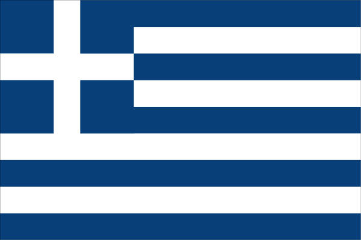

Recovered Photos
These images were successfully recovered from the original website archive.

Tenedian Brotherhood gathering — from the home page

Andy Fenady, John Wayne & son Michael Wayne — filming of Chisum, December 1969

Actor Dan Blocker (Bonanza, The Rebel) — photo from Georg Fenady's collection

Greek Orthodox cross
Not Archived — Help Us Recover These
These photo albums existed on the original website but were not captured by the Wayback Machine. If you have copies of any of these photos, please contact us.
Annual Picnic Photos
Decades of Brotherhood picnics at Locust Point Beach and other venues
Apokria Celebrations
Costumes, music, and dancing from the pre-Lent gatherings
Georg Fenady & Actors — Full Album
Georg directing Arnold, Terror in the Wax Museum, Combat, Quincy and more; photos with David Hasselhoff, Jack Klugman, and others
Wedding Photos — Pages 3 & 4
Additional Tenedian family wedding photographs
Pictures of Tenedos (Bozcaada)
The island itself — its village, harbor, castle, and landscapes
The 1874 Fire
Historical documentation of the great fire that devastated the island
Greek Festivals
Community Greek festival celebrations
Veterans
Tenedian Brotherhood members who served in the U.S. armed forces
Family Pictures
Family portraits and personal photographs from Tenedian families
Souvenir Programs
Brotherhood event programs and commemorative booklets
Cemetery Records
Documentation of Tenedian burial sites and memorials
Unknown Photos
Unidentified individuals and events from the archive
Share Your Photos
Do you have photographs from Tenedian Brotherhood events, family gatherings, or the island of Tenedos itself? We would love to include them in this gallery and preserve them for future generations. Please reach out to us.